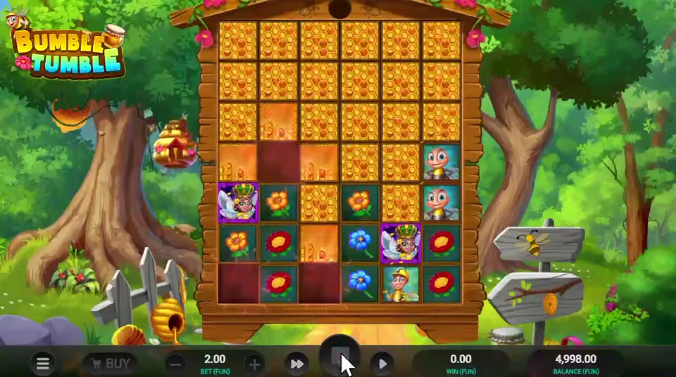
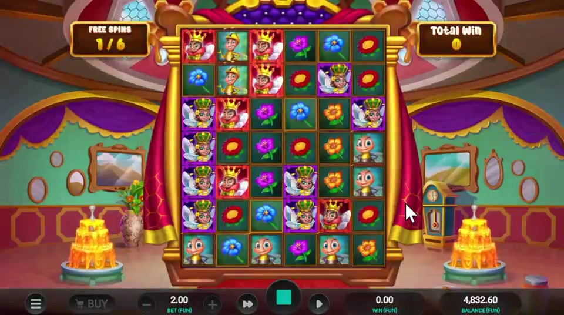
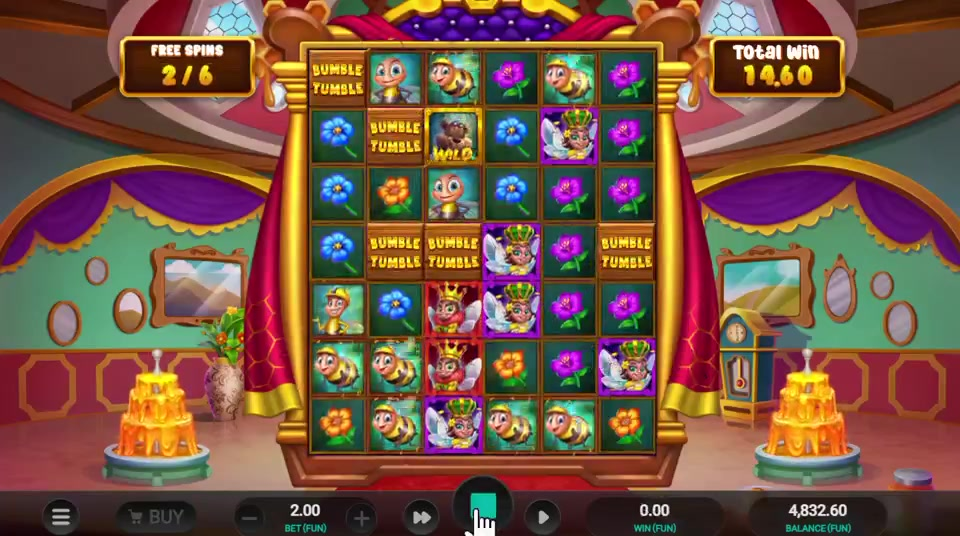

← Client projects / Bumble Tumble
iGaming slot · Relax Gaming · 2024
Bumble Tumble
Honey, hives and sunflower fences.
Relax GamingReskinCascading WinsFree Spin Bonus
Concept
A honey-soaked countryside reskin built around a Cascading Win mechanic, where winning symbol clusters clear the board and let a fresh cascade of imagery tumble in behind them, with a Free Spin bonus feature. Beehives, honey jars and sunflower fences carry the visual identity, giving the tumble mechanic a warm, pastoral read rather than a generic candy-match aesthetic.
My role
I led the creative direction of the Bumble Tumble reskin for Relax Gaming: symbols, visual language, animation flow and audio, from initial concept through documentation to final handoff.
- Creative direction. Guided the symbol set and visual theme so the honey-farm identity stayed consistent across every asset.
- Animation and audio. Directed the animation flow and sound design, so the reskin felt like one finished product.
- Documentation. Documented every stage from concept to final handoff, so the work could be reviewed and delivered cleanly.
- Fidelity to the original. Changed what the player sees and hears while leaving the original title's gameplay untouched.
- Delivery. Handed the finished reskin over to Relax Gaming as designer and creative lead.
PublisherRelax Gaming
Year2024
TypeiGaming slot
PhaseReskin
FeaturesCascading Wins, Free Spin Bonus
All design and development rights reserved to Relax Gaming.
Gameplay
Gameplay captures
Screens from the gameplay recording.


